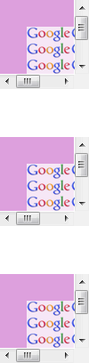
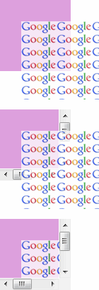
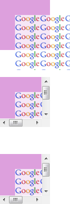

根据 CSS2.1 规范中的描述，在某些情况下，一个框可能会溢出，换句话说，它的部分或者全部内容会出现在框的外部。 'overflow'
特性指定了当一个块级元素的内容溢出该元素盒子的时候是否剪裁，它应用在非替换的块级元素、单元格和行内块元素上。
'overflow' 特性取值有 'visible'、'hidden'、'scroll' 和 'auto'，默认值为 'visible'；当 'overflow' 取值为 'hidden'
时，元素将剪裁溢出的内容，并且不提供滚动条显示溢出内容；当 'overflow' 取值为 'scroll' 时，元素将剪裁溢出的内容，不管内容是否溢出均会提供滚动机制；当 'overflow' 取值为
'auto' 时，对于溢出的内容用户端应该提供一个滚动机制。
一个设置了 position:relative 的元素虽然为定位元素，但其仍然位于普通流中。而一个设置了 position:absolute 或者 position:fixed 的元素则属于定位流中。
关于 'overflow' 的详细信息，请参考 W3C CSS 2.1 规范 11.1.1 Overflow: the 'overflow' property 。
在 IE6(S) IE7(S) 中，若一个 'overflow' 特性不为 'visible' 的非定位元素内包含了可能溢出其的相对定位元素，则溢出部分不会被剪裁。
在 IE6(Q) IE7(Q) IE8(Q) 中，若一个 'overflow' 特性不为 'visible' 的非定位元素内包含可能其溢出的绝对定位元素，则仍然会剪裁溢出的绝对定位元素。
此问题可能造成元素在 IE6(S) IE7(S) 中本应被剪裁的部分仍然可视，从而造成布局差异。
| IE6(Q) IE7(Q) IE8(Q) | |
|---|---|
| IE6(S) IE7(S) |
分析以下代码：
<!DOCTYPE html> <html> <head> <style> .child { opacity:0.75;
filter:alpha(opacity=75); background-image:url(google_small.gif); } </style> </head>
<body style="margin:0;"> <div style="width:100px; height:100px; background:plum;
overflow:auto; position:static;"> <div class="child" style="width:110px;
height:110px; margin:30px 0 0 30px; position:absolute;"></div>
</div> <br /> <br /> <br /> <div style="width:100px; height:100px;
background:plum; overflow:auto; position:static;"> <div class="child"
style="width:110px; height:110px; margin:30px 0 0 30px; position:relative;"></div> </div> <br /> <br />
<br /> <div style="width:100px; height:100px; background:plum; overflow:auto;
position:static;"> <div class="child" style="width:110px; height:110px;
margin:30px 0 0 30px; position:static;"></div> </div>
</body> </html>
上面的代码分为三组，均为一个 overflow:auto 的非定位元素内包含了一个溢出其生成的包含块的子元素。三组的区别为子元素的 'position' 特性分别为 'absolute'、'relative'、'static'。
各浏览器中表现如下：
| IE6(Q) IE7(Q) IE8(Q) | IE6(S) IE7(S) | IE8(S) Firefox Chrome Safari Opera |
|---|---|---|
|  |  |  |
position:relative 与 position:static 的子元素均位于普通流中，其包含块为设置了 overflow:auto 的父元素，所以子元素溢出的部分应该被裁切。而 position:absolute 使子元素脱离普通流，进入定位流，其包含块不再为设置了 overflow:auto 的父元素，则这个绝对定位元素不会被裁切。
而在 IE6(Q) IE7(Q) IE8(Q) 中，子元素绝对定位后依然可以被裁切，此时浏览器对绝对定位元素的包含块判断错误。
在 IE6(S) IE7(S) 中，一个 'overflow' 特性不为 'visible' 的非定位元素内包含了可能溢出其的相对定位元素时，溢出部分不会被剪裁。
根据实际需求可以去掉包含块的 'overflow:hidden' 或采用其他定位方案，避免在 IE 中触发此问题，实现在各浏览器表现一致。
| 操作系统版本: | Windows 7 Ultimate build 7600 |
|---|---|
| 浏览器版本: |
IE6
IE7 IE8 Firefox 3.6 Chrome 4.0.302.3 dev Safari 4.0.4 Opera 10.60 |
| 测试页面: | overflow_hidden_relative_no_clipped.html |
| 本文更新时间: | 2010-07-21 |
overflow hidden position relative hidden 溢出 剪裁 相对定位